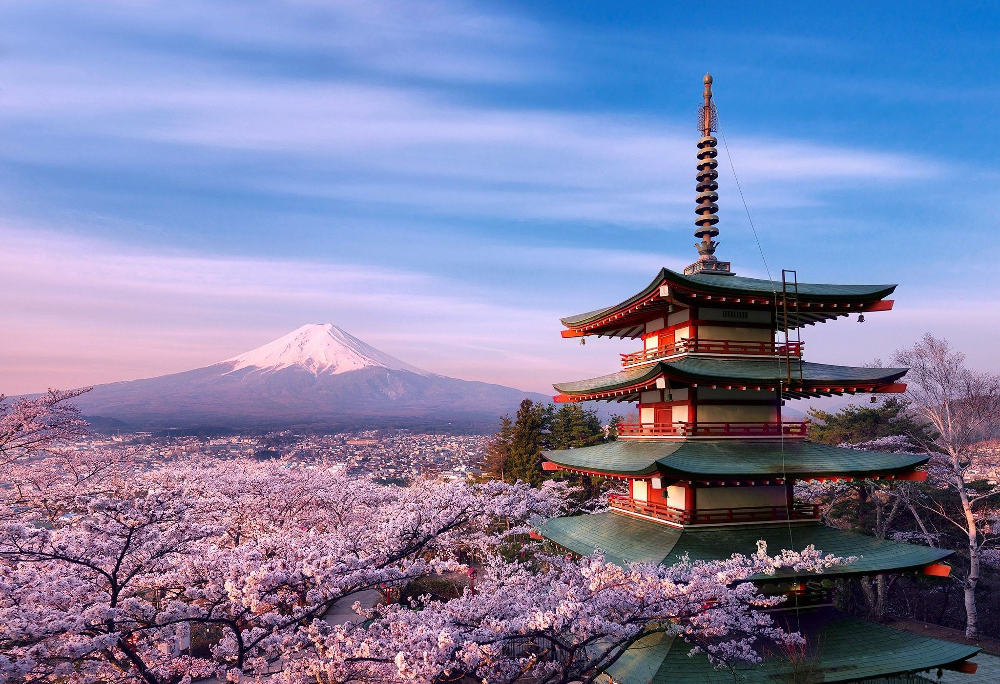

7 съвета при пътуване до Япония
Япония има репутацията на място, обвързано с етикета, което може да бъде плашещо за посетителите за първи път. Не се притеснявайте! Традициите тук не са по-формални или ограничаващи, отколкото в много други дестинации по света. Освен това повечето местни жители са известни с гостоприемството си и са повече от готови да помогнат на чуждестранни пътници.
1. Изберете през кой сезон да посетите страната
Япония е наистина целогодишна дестинация. Всеки сезон носи свои собствени акценти, от черешови
цветове през пролетта и фестивали през лятото до зашеметяващата зеленина на есента и епичните ски
през зимата. Всеки път, когато посетите, ще намерите много забавления.
Драматичните разлики между сезоните изискват да планирате и опаковате нещата според времето –
независимо дали отивате на плажовете или на ски пистите! Имайте предвид, че температурата може да
варира значително в зависимост от това коя част на страната посещавате, така че не забравяйте да
проверите прогнозата за вашите конкретни дестинации.
2. Проверете паспортите и визите
Решаваща част от всяко задгранично пътуване! Паспортът ви трябва да има валидност най-малко шест месеца от крайната дата на вашето посещение и се препоръчват две до четири празни страници за виза. Що се отнася до визи, може да не ви е необходима такава – гражданите на тези страни могат да влязат в Япония без туристическа виза, обикновено за 90 дни. Винаги се консултирайте с японското посолство за най-актуалната информация, преди да пътувате. Също така препоръчваме да получите пълна застраховка за пътуване за вашето пътуване, за да планирате неочакваното.
3. Научете някои ключови японски фрази
Преди всичко – не се паникьосвайте! Напълно възможно е да пътувате из Япония, без да знаете езика. Повечето японци говорят малко английски.
4. Изберете през кой сезон да посетите страната
Япония е наистина целогодишна дестинация. Всеки сезон носи свои собствени акценти, от черешови
цветове през пролетта и фестивали през лятото до зашеметяващата зеленина на есента и епичните ски
през зимата. Всеки път, когато посетите, ще намерите много забавления.
Драматичните разлики между сезоните изискват да планирате и опаковате нещата според времето –
независимо дали отивате на плажовете или на ски пистите! Имайте предвид, че температурата може да
варира значително в зависимост от това коя част на страната посещавате, така че не забравяйте да
проверите прогнозата за вашите конкретни дестинации.
5. Решете дали да закупите карта за пътуване с влак (Japan Rail Pass)
Japan Rail Pass е карта за влак с отстъпка, предлагана изключително за туристи. Дава ви неограничено пътуване с повечето влакове – включително Шинкансен (влакът-стрела) – за периоди от 7, 14 или 21 последователни дни. Звучи като страхотна сделка и ако правите няколко пътувания на дълги разстояния, това може да ви спести пари за пътуване.
6. Носете си винаги пари в брой (йен)
Въпреки високотехнологичната си репутация, Япония е общество, което е много ориентирано към парите – така че вземете много със себе си! Много барове, пазари, малки магазини и местни ресторанти приемат плащане само в брой, особено в селските райони. Вероятно ще трябва да носите повече пари в брой, отколкото сте свикнали. За щастие Япония е много безопасна, така че можете да се чувствате комфортно да го правите.
7. Не давайте бакшиш
В японската култура е да се гордееш с работата си. Като такива служителите имат най-високи стандарти, когато предоставят услуга и не чувстват нужда да приемат бакшиши, за да се чувстват оценени. За японците опитът да дадат бакшиш предполага, че работодателят им не ги цени достатъчно, за да предложи достатъчно заплащане.